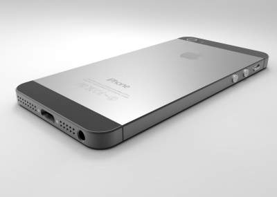

Um telefone móvel ou telefone celular, também chamado de telemóvel ou simplesmente celular, é um telefone portátil que pode fazer e receber chamadas através de um link de radiofrequência enquanto o usuário está se movendo dentro de uma área de serviço telefônico, em oposição a um telefone fixo (telefone fixo). A ligação de radiofrequência estabelece uma conexão com os sistemas de comutação de uma operadora de telefonia móvel, que fornece acesso à rede telefônica pública comutada (PSTN).Os serviços telefônicos móveis modernos usam uma arquitetura de rede celular e, portanto, são chamados de telefones "celulares".
Além da telefonia, os telefones celulares digitais suportam uma variedade de outros serviços, como mensagens de texto, mensagens multimídia, e-mail, acesso à Internet (via LTE, 5G NR ou Wi-Fi), comunicações sem fio de curto alcance (infravermelho, Bluetooth), acesso via satélite (navegação, conectividade de mensagens), aplicativos empresariais, pagamentos (via NFC), reprodução e streaming de multimídia (rádio, televisão), fotografia digital e videogames. Os telefones celulares que oferecem apenas recursos básicos são conhecidos como feature phones; telefones celulares que oferecem recursos de computação bastante avançados . 